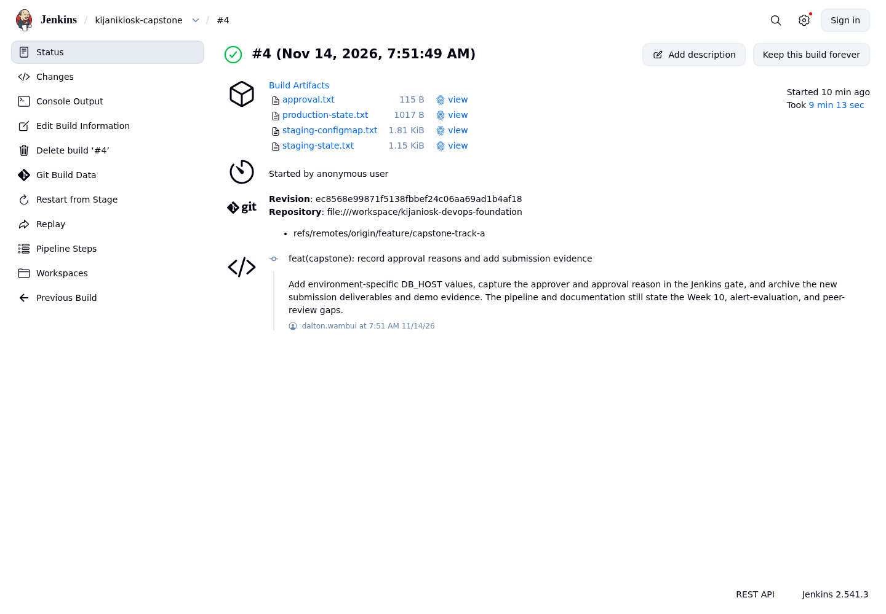
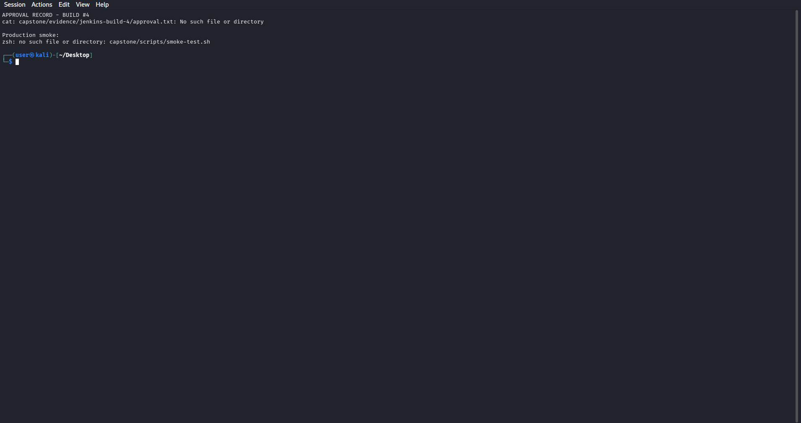
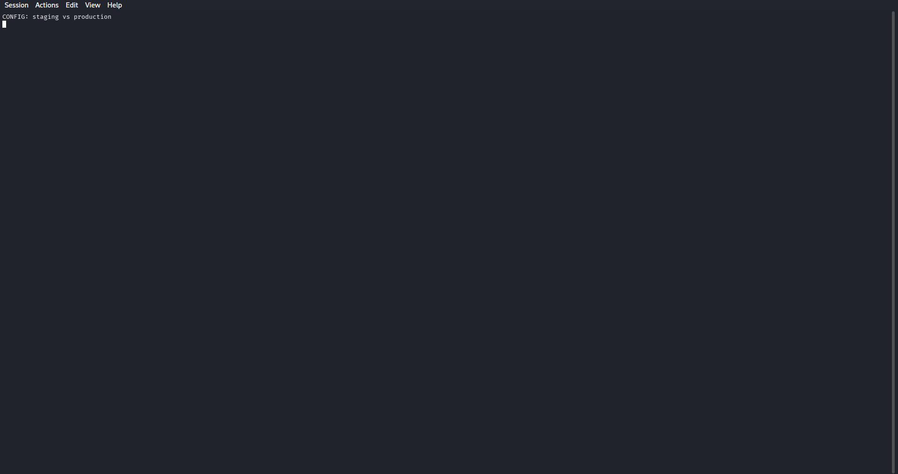
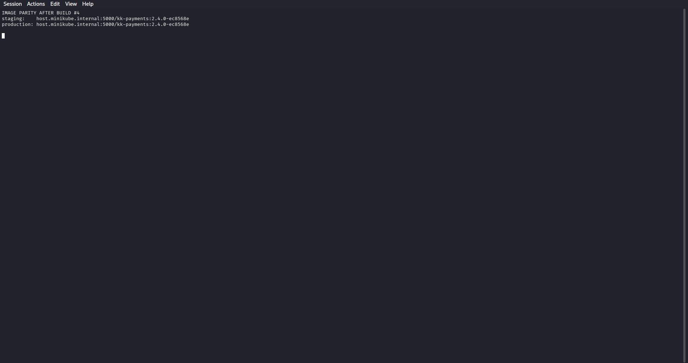
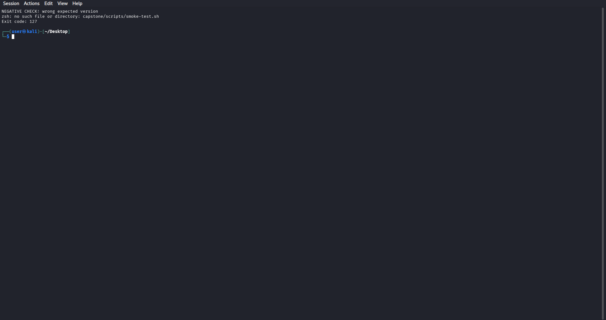
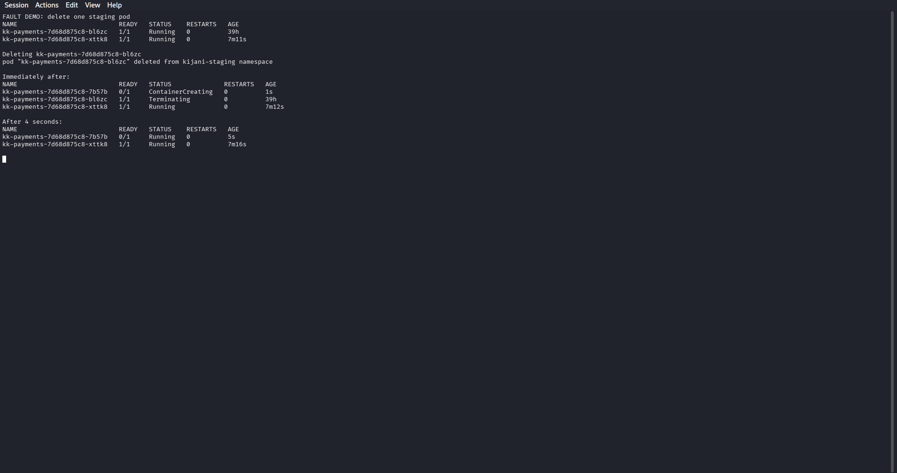
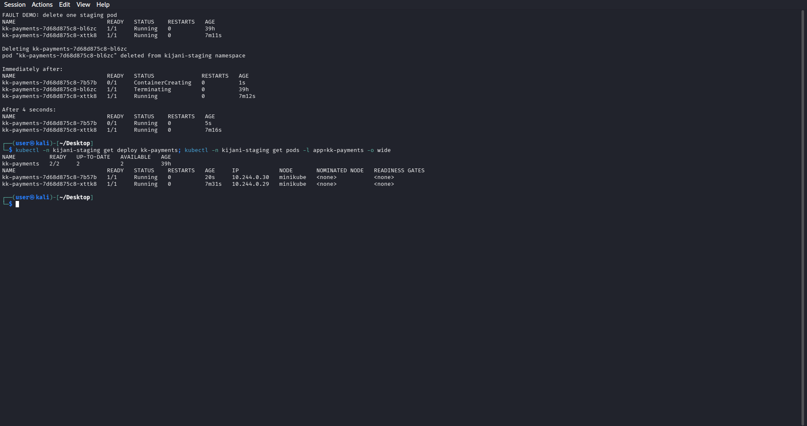

Gaps still shown honestly: Week 10 serverless receipt chain is not implemented; alerts are not evaluated; production is a namespace in the same minikube cluster; peer review is a self-review fallback.

The build page shows the stages that matter: Verify, Build image, Push image, Deploy staging, Smoke test staging, Approve production, Deploy production, and Smoke test production.
Smoke test staging: PASS health version 2.4.0-ec8568e Input requested: Deploy 2.4.0-ec8568e to production? Production approved by anonymous: Staging smoke passed for 2.4.0-ec8568e; approving production promotion Smoke test production: PASS health version 2.4.0-ec8568e Finished: SUCCESS

approver=anonymous
reason=Staging smoke passed for 2.4.0-ec8568e; approving production promotion
tag=2.4.0-ec8568e
PASS health: {"service": "kk-payments", "status": "ok", "version": "2.4.0-ec8568e"}
PASS total: {"total": 42}
PASS smoke test: kijani-production/kk-payments-service
anonymous because the lab Jenkins has no authentication; that is a real limitation, not a claim of strong authorization.
Staging and production render different DB_HOST, NODE_ENV, RECEIPTS_BUCKET, and replica counts. APP_VERSION is absent because it belongs to the image, not the ConfigMap.


The smoke test exits non-zero and the assertion shows the actual version versus the deliberately wrong expected version. No PASS line is printed. This is the guardrail that build #1 exposed as necessary; the screenshot was recaptured after build #4.

One pod is Terminating while the replacement is created. The Service still has the other ready pod.

The Deployment returns to 2/2 available without a manual rollout. This is controller self-healing, not a rollback.